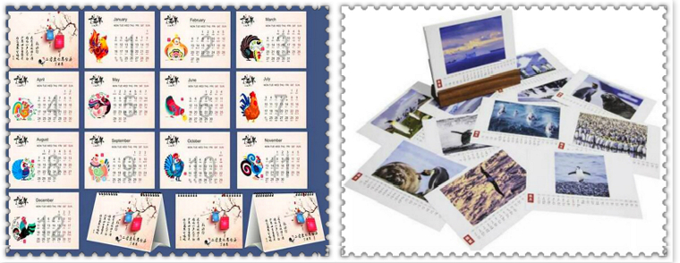
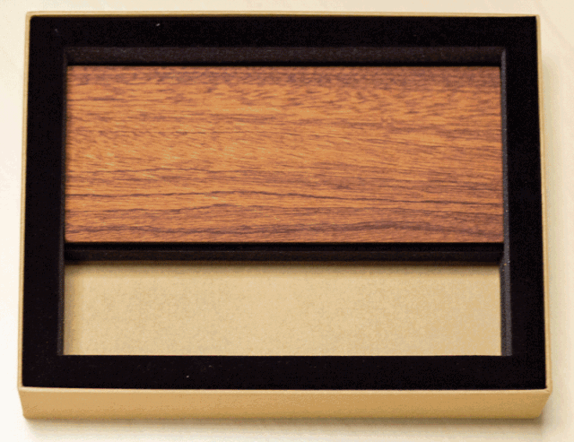

2019台历印刷新样式？中国印告诉你中国印 2018-10-01 1:54
← Sidebar Menu Thingy
又到了印刷厂台历挂历印刷,日历印刷业务的旺季,面对即将到来的2019年,我们怎样制作一款各方面都较好的台历日历挂历呢,下面中国印小编将围绕三个点为您解答!
(一)台历挂历定制的常识
台历印刷品在客户体验度上更实用，更方便客户查看日期与记录当日行程。挂历印刷品在广告宣传上有力度，在处理客户关系时比台历更有效果。台历印刷品适合赠与所有新老客户，促进关系，而挂历印刷品更适合赠与公司重要客户，更有档次，更有利于促进与客户之间的关系。高档次挂历客户也很乐于挂其公司或家里。无论是挂历或台历印刷品都需大气、简洁、高档，客户才愿意使用，印刷品才可发挥宣传效果。
（二）台历挂历印刷设计制作及注意事项：
专版台历挂历是相对于通用内容的台历挂历而言，可根据特殊要求进行单独的设计、制作。内容、款式风格等都是专一的。整个过程都是专门围绕着客户的需求而开展的，工序有：设计风格小样--设计印刷稿—打数码样--制版--印刷--裁切--裱板—配页—裁成品--打孔--穿环压环--质检--包装--交付。此外还有：复膜--烫金银--起鼓--过油--模切等工艺工序根据产品要求按需加入。台历印刷的尺寸其实可以天马行空，心有多大（别超过印刷机）它就有多大只要肯做，一切皆有可能。但是，企业必须考虑成本。台历印刷规格：横式台历；方形台历；条形台历；横式迷你小台历；竖式迷你小台历；竖式台历。台历印刷张数根据月分通常可分为：周历、半月历、月历、双月历，加上封面就对应为52张、25张、13张、7张，并可根据实际内容增加页面。通常台历印刷105g-300g克重的纸张都行，选择纸张厚度时要充分考虑纸张数。52张周历不宜选超过200克的纸张，超过200克台历印刷线圈难以配套7张双月历最好不要选择157克以下的纸，这样显得单薄，25张半月历如果选用300克的纸不用三角台历架，否则头重脚轻，立不稳。

（三）设计时应注意以下几点：
一份日历印刷是否精美，不是仅仅靠设计完成的，还需要通过印刷，最终达到完美的效果。下面是在设计制作过程中需要注意的几个事项。
既然台历、挂历一般都采用"自定义纸张大小"，那么就无法进行"无边距"设置来打印，也就是照片四周都会有3-4毫米的白边，如果要打印为无边距只能纸张设置用大一点最后把白边裁切掉。如果有意要将打印台历、挂历印刷四周留出白边宽一点，比如四周留1厘米宽的白边，一般可以采用在图片制作中就设计带有白边，也可以在打印输出中来设置纸张边距，想留多宽就留多宽，在打印输出中来设置纸张边距就显得灵活性更强。
台历印刷还需要做一个支架。通常是灰板纸或者白板纸，一般都是会选择1000g左右的。外皮的话可以选择特种纸张，通常会要求加一些工艺，例如烫金烫银、凹凸、压纹、镂空等。想要台历印刷看起来精致上档次，建议最好做一些特殊工艺。相对于挂历印刷而言，台历印刷的纸张厚度要充分的考虑，这关系到整个台历的厚度，影响后期成品效果。
台历印刷纸张的选择非常重要，有的公司可能也会要求使用艺术纸。除了纸张的选择以外，台历印刷时也要非常小心，台历印刷一定要根据装订的方式来拼版，最好是做一个样品看看。还有就是台历印刷完之后，做后期工艺，还需要制作台历的底座，这一系列做好之后就可以装订了。